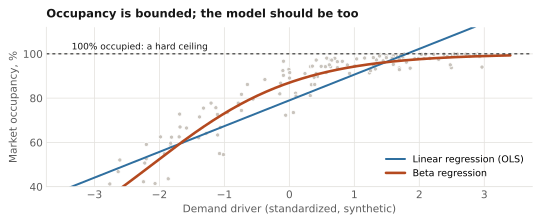
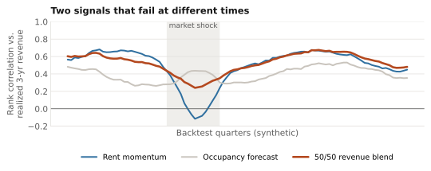
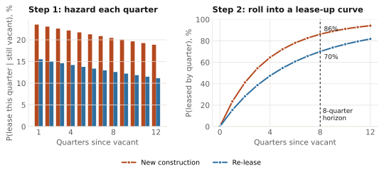
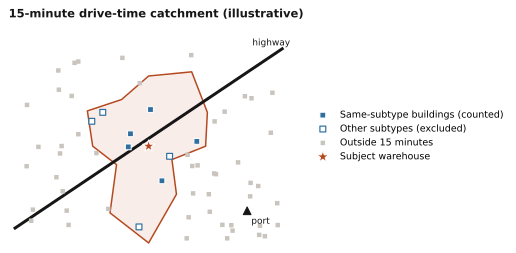
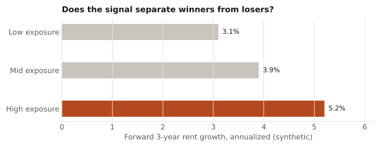

1 Market revenue: which markets
For an industrial owner, revenue depends on two things: how fast rents grow and how much of the space is filled. This model ranks the top 100 US industrial markets by expected revenue three years out, combining both into one number, so the team can see at a glance where to focus.
Under the hood. The target is each market's realized revenue three years later, with rent growth and occupancy combined. Two signals are blended 50/50 and ranked across markets: a rent-growth momentum signal (trailing rent growth against the national average) and a forward occupancy forecast (current occupancy level and trend, plus a forward absorption estimate built from supply and construction pipeline data).
The occupancy forecast is a beta regression. Occupancy can never exceed 100%, and it varies less as a market nears full occupancy; beta regression respects both, while ordinary linear regression overshoots the ceiling and has to be clipped after the fact.

Validation. Every quarter, the ranking is scored by its Spearman rank correlation with realized three-year revenue, across a backtest of more than 25 years. The blended ranking beat the previous rent-only model on ranking accuracy. It also holds up better through shocks, because momentum and occupancy tend to fail at different times.

2 Property leaseability: which buildings
Once a market looks attractive, the question becomes a specific building: if it is vacant, how quickly will it lease? The model scores every building in the national industrial universe each quarter with its probability of reaching stabilization (at least 90% leased) within eight quarters.
Under the hood. A discrete-time survival model estimates the chance a building leases in each quarter, given it is still vacant, and rolls those per-quarter hazards into a lease-up curve. Survival modeling fits the problem: lease-up depends on market conditions that change every quarter, and many buildings are still vacant, so their outcome is not yet known (censored). New construction (leasing from delivery) and re-lease (an existing building backfilling vacant space) are fit as separate models because their drivers differ. Accuracy is checked on discrimination (AUC) at several horizons. Earlier versions used gradient-boosted trees trained on synthetic sets from hedonic models.

From probability to decision. A probability on its own is hard to act on, so each building's score is also expressed as a percentile rank against three peer groups: all buildings nationally, buildings in the same market, and buildings of the same size class in the same market. Results can be cut by market, size and vintage class and tracked quarter by quarter.
Example output · made-up building
Shallow-bay warehouse · re-lease · built 1985
- P(lease by 8Q)
- 74%
- National pctl
- 81st
- Market pctl
- 77th
- Market × size pctl
- 70th
What drives both: geospatial features
Location matters in ways a building's own attributes do not capture. I built point-of-interest access features (highways, ports, airports) at census-tract level, plus 15-minute drive-time aggregates of nearby space fundamentals and lease-up events. A same-subtype variant keeps a warehouse's comparison set from being diluted by nearby flex buildings. These were among the largest single drivers of model lift.

Research: does outside data help?
A framework to test whether outside data carries investment signal beyond standard fundamentals. Consumer card-panel spend, labor-cost data, maritime import shipments and freight flows were linked to individual properties through address matching and geographic-proxy joins, since none share an identifier with lease records.
Under the hood. Every source runs through the same engine: each period, split properties into terciles by their exposure to the signal, then track forward rent growth by group. A signal is useful only if the groups separate consistently. The strongest signals became ongoing inputs to investment decisions.

Skills
- Beta regression
- Discrete-time survival analysis
- Censored data
- Cross-sectional ranking
- Spearman IC backtesting
- Drive-time and POI features
- Entity resolution
- Signal research